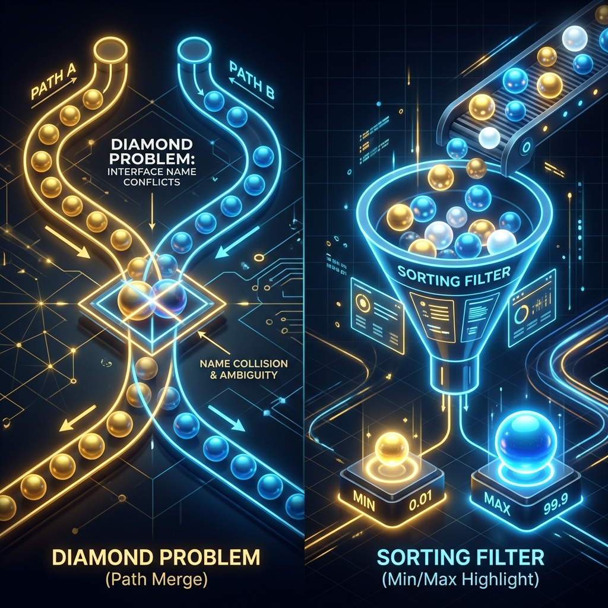

This guide explores two distinct Java topics often encountered in technical interviews: how to flatten nested arrays to find min/max values using Streams, and how Java handles multiple interface inheritance name clashes, famously known as the Diamond Problem.
Let's break down both concepts using simple real-world analogies and trace how Java resolves them.

Imagine you have two baskets (rows of a 2D array) containing numbered balls. To find the overall smallest (minimum) and largest (maximum) numbers, you do not check each basket separately. Instead, you dump all balls onto a single flat carpet (flatMap), sort them in a line, and pick the first ball (min) and the last ball (max).
Imagine a student belongs to two clubs, Club One and Club Two. Both clubs have a default rule for how members should state their name:
- Club One: *"By default, say your name is 'One'!"*
- Club Two: *"By default, say your name is 'Two'!"*
If the student is asked to state their name, they get stuck in a dilemma—which club's rule should they follow? This is the Diamond Problem.
To resolve this conflict, Java forces the student class to write their own custom rule, overriding the default behavior to clarify which name to output.
Walkthrough of the Main Method Scenario
Let's trace how the program executes step-by-step from the entry point of the main method:
The program declares a simple 2x2 grid representing numeric bounds:
int[][] arr = {{1, 100}, {50, 130}};This array stores the values: 1, 100, 50, and 130.
The program converts the array into a stream, merges the rows, and sorts the results:
Arrays.stream(arr).flatMapToInt(Arrays::stream).sorted();Arrays.stream(arr)creates a stream of the rows:[{1, 100}, {50, 130}].flatMapToInt(Arrays::stream)flattens the rows into a single primitive integer stream:[1, 100, 50, 130]..sorted()sorts them in order:[1, 50, 100, 130]. The first element is the min (1), and the last is the max (130).
The program declares two interfaces containing default implementation behaviors:
interface One {
default String getName() { return "One"; }
}
interface Two {
default String getName() { return "Two"; }
}If a class attempts to implement both interfaces (class Child implements One, Two), the Java
compiler will throw an error: "inherits unrelated defaults for getName()". To fix this, the class
must explicitly override the method to resolve the collision:
class Child implements One, Two {
@Override
public String getName() {
return One.super.getName(); // Explicitly chooses One's default
}
}Java Implementation
Below is the complete Java code demonstrating array flatmapping and default interface declarations:
package io.practise.accolite;
import java.util.Arrays;
public class MinMaxFromMultiDimentionalArray {
public static void main(String[] args) {
int[][] arr = {{1, 100}, {50, 130}};
// Flattens and sorts the 2D array elements
Arrays.stream(arr)
.flatMapToInt(Arrays::stream)
.sorted();
}
}
interface One {
default String getName() {
return "One";
}
}
interface Two {
default String getName() {
return "Two";
}
}Conclusion
Flatmapping nested collections resolves layout barriers, allowing you to easily sort and search elements across dimensions. In Java's object model, default methods inside interfaces provide great flexibility, but implementing multiple interfaces with identical defaults requires explicit overriding to resolve compile-time inheritance conflicts.